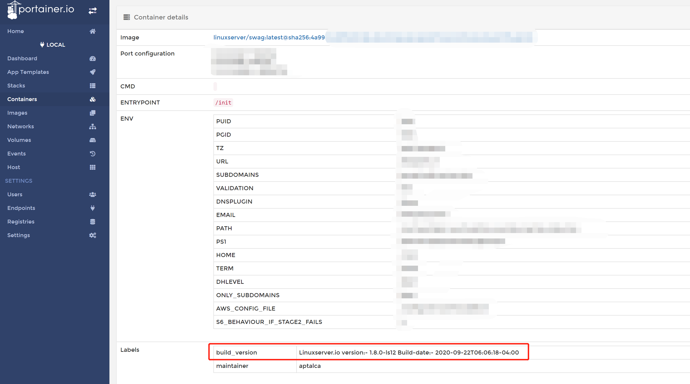

进入容器
在使用Docker的过程中，你也许会想要查看容器内部的数据。
进入容器内的Shell
在部署、调试容器的时候，经常会需要进入到容器内的Shell。
# 替换 <container_name> 为容器的名称
docker exec -it <container_name> /bin/bash
查看容器的日志（logs）
我们绝大多数的镜像都会把应用的运行日志输出到终端上，可以使用 docker logs 命令来查看：
# <number_of_lines_to_start_with> 替换为你希望查看日志的行数
# <container_name> 替换为容器名
docker logs -f --tail=<number_of_lines_to_start_with> <container_name>
默认情况下，docker会输出容器的所有日志，所以通过 --tail 参数来限制输出的日志行数。
为了更方便使用这条命令，也可以通过编辑 ~/.bash_aliases 文件来自定义一条命令：
# ~/.bash_aliases
alias dtail='docker logs -tf --tail="50" "$@"'
之后只需要执行 dtail <container_name> 就可以了。
查看构建的版本号
如果您在使用的过程中遇到了某些问题，您可以把版本号反馈给我们，也许我们在已发布的新版本中解决了您的问题。当然如果您反馈给我们的已经是最新的版本号，那您可能发现了我们还未发现的问题。提供正确的版本号将有助于我们修复镜像的问题，也会更加方便解决您遇到的问题。
可以通过这条命令获取容器的版本号：
# 替换 <container_name> 为容器的名称
docker inspect -f '{{ index .Config.Labels "build_version" }}' <container_name>
如果获取镜像的版本号，则是：
# 替换 <container_name> 为容器的名称
docker inspect -f '{{ index .Config.Labels "build_version" }}' linuxserver/<image_name>
[!TIP]
如果你已经按照 Portainer-可视化管理Docker 这篇文章所述安装了portainer，那么你也可以在容器的管理页面的“Container details”面板的“Labels”中看到容器的版本号
